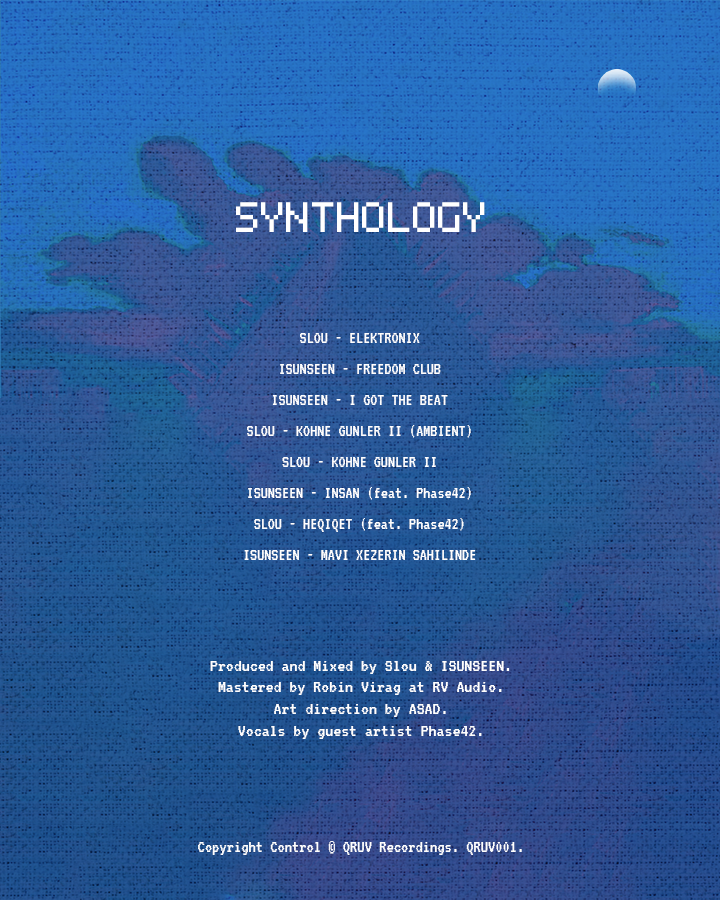

.png)
Dedicated to the lively streets of Baku and the charming Caspian Sea, SYNTHOLOGY reflects the essence of a brave generation.
SYNTHOLOGY is an expression that fully embraces the light and dark sides of our being, the voice of our multifaceted nature.
In the painting, the cloud symbol serves as an artistic expression of timelessness, representing one of the few elements of nature that remains constant even in our era of rapid change.
The artist, through the universal and unchanging appearance of the cloud offers viewers a moment of pause amidst the speed and perpetual change of modern life, thus allowing recognizing and appreciating the stable and immutable aspects of nature and the universe.
The cloud symbol is both a salute to the memories of the past and an invitation to the hopes of the future.
Produced and Mixed by Slou & ISUNSEEN.
Mastered by Robin Virag at RV Audio.
Art direction by Asad Sultanli.
Vocals by guest artist Phase42.
Copyright Control ️© QRUV Recordings. QRUV001.